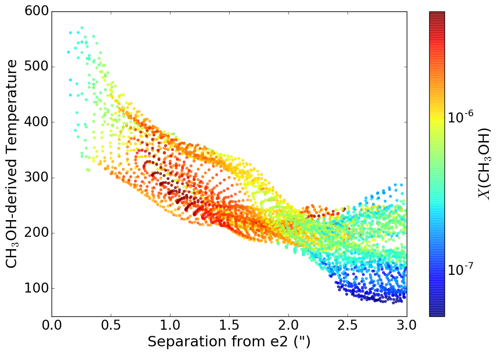
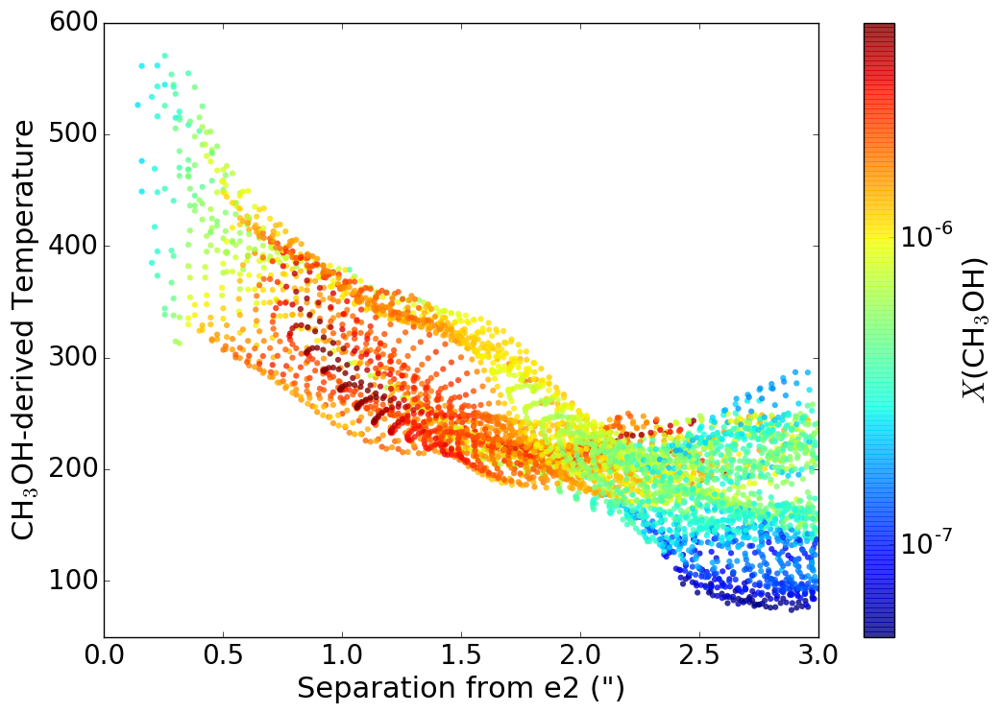
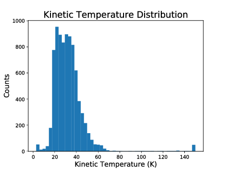

W51 in ALMA-IMF
With contributions from students:
- Desmond Jeff: PhD student
- Theo Richardson: PhD student
- Connor McClellan: REU 2018
- Josh Machado: REU 2019
- Danielle Bovie: REU 2020
And many coauthors on W51 papers, especially those also in
ALMA-IMF: Roberto Gálvan-Madrid, John Bally, Cara Battersby,
Erik Rosolowsky, Luke Maud
Slides available at https://keflavich.github.io/talks/.
Use arrow keys to navigate.
Overview
- W51A is in the top 10 most massive SFRs in the Galaxy
- CMF was "measured" in Ginsburg+ 2017, but measurement dominated by temperature uncertainty
- W51 will serve as a key test case in ALMA-IMF for:
- Temperature Measurement
- High resolution counterpart identificaiton
- Free-free subtraction
Temperature Measurement: Hot cores
We used CH3OH rotational diagrams to measure hot core temperatures:
 

Desmond Jeff is applying the same technique in Sgr B2 DS
Temperature Measurement: Not hot cores
H2CO image quality was too poor in Cycle 2 data.
Josh Machado fit NH3 temperatures using VLA
D-config data from Cara Battersby:


Temperature Measurement: Not hot cores
Ammonia temperatures result in lower masses, and systematically different masses in different regimes,
than isothermal assumptions. [Credit: Josh Machado]
Dashed: 1-to-1
Dotted: M(NH3) = 0.25 M(20K)

TODO: Compare NH3, H2CO, and PPMAP temperatures
High resolution: What's in a core?
Many cores are protostellar: they have hot, luminous stars inside. We have long-baseline (0.03-0.05") data showing this:
Danielle Bovie will cross-match the low- and high-resolution catalogues this summer
High resolution: What's in a core?
Most protostellar cores have slopes shallower than α<3 in ALMA B3/B6 plus curvature.
Connor McClellan's 2018 REU work; Theo Richardson will be improving SED
modeling efforts by associating masses with the Robitaille+ 2017 model
grid.
Ionized Gas
W51 is full of ionized gas on all scales. Smaller
objects are denser.
The many small objects may be young B-stars.
The many small objects may be young B-stars.
See forthcoming paper from Rudy Rivera, Roberto Gálvan-Madrid, me, and Stan Kurtz.
Ionized Gas
VLA free-free subtraction works well.Ionized Gas
VLA free-free subtraction works well.
Summary
- W51A is in the top 10 most massive SFRs in the Galaxy
- CMF was "measured" in Ginsburg+ 2017, but measurement dominated by temperature uncertainty
- W51 will serve as a key test case in ALMA-IMF for:
- Temperature Measurement
- High resolution counterpart identificaiton
- Free-free subtraction
Be on the lookout for funky masers!
CS masers may trace a disk in W51-e2e